Removable sleeves
Long sleeves, short sleeves or none at all. Snap them on or off as the weather changes.
Designed by a PNW mom · Small first batch
Removable sleeves, a swappable inner liner and legs that unzip for play — so your little one sleeps comfy whether it's July or January. 100% cotton, inside and out.
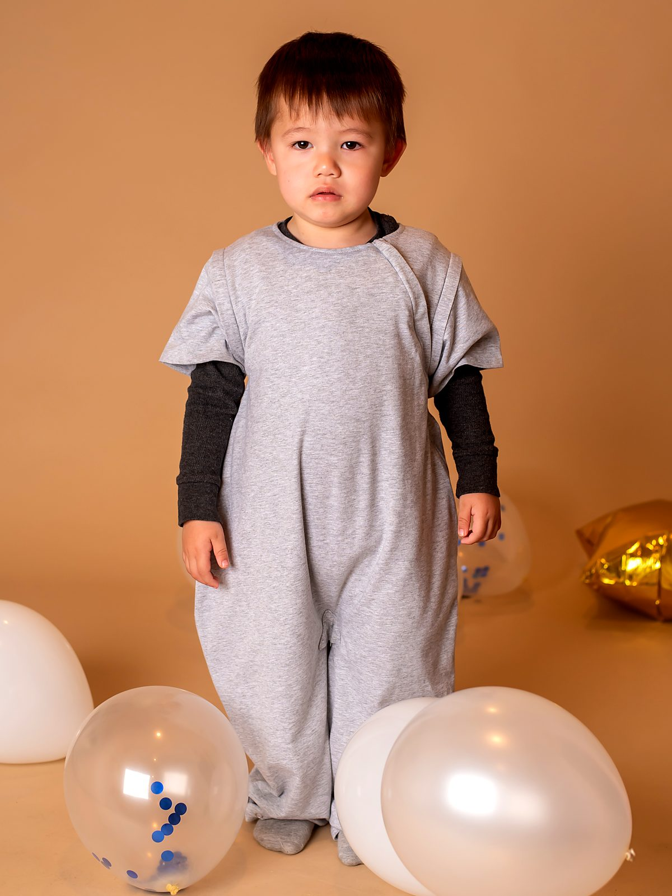
Why parents love it
Long sleeves, short sleeves or none at all. Snap them on or off as the weather changes.
A full-body liner zips in for chilly nights and comes out for warm ones.
Fold the bottom open so they can walk and play before bed, then close it into a classic sleep bag.
A two-way zipper down the middle makes middle-of-the-night diaper changes quick and quiet.
Soft, breathable cotton inside and out. Nothing scratchy against their skin.

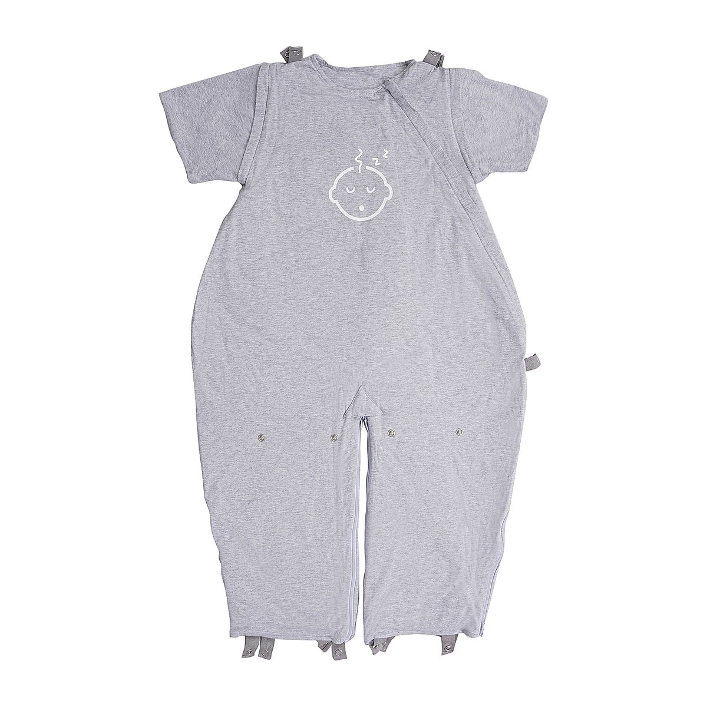


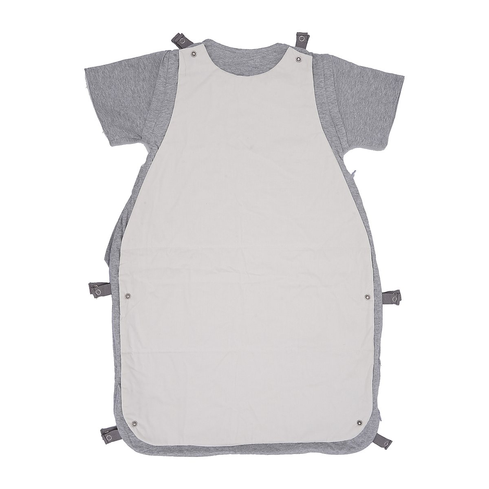
Five ways to wear it
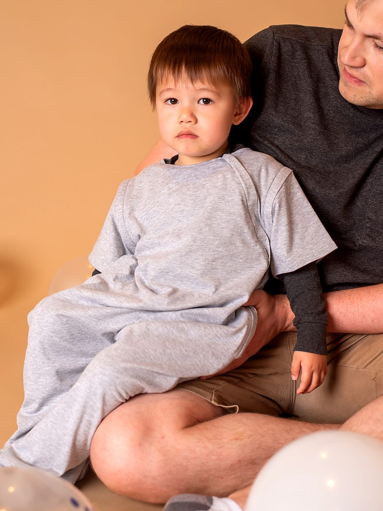
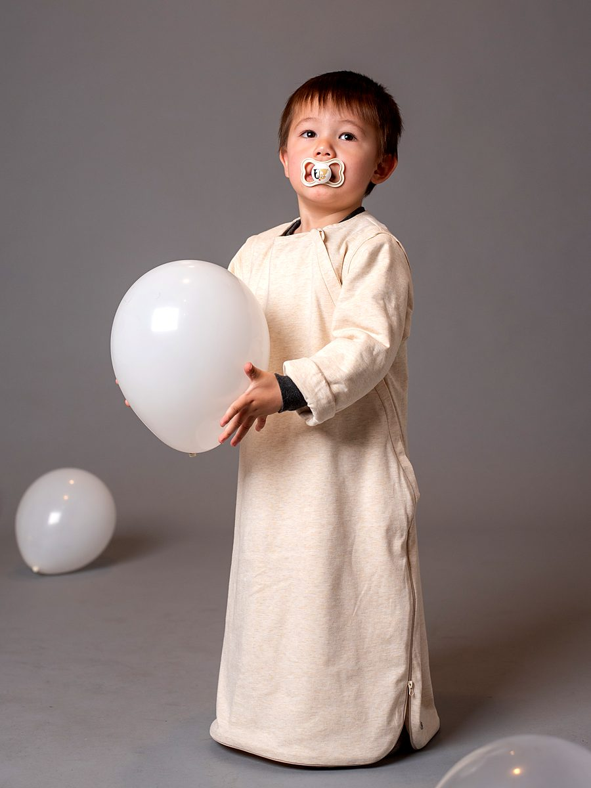
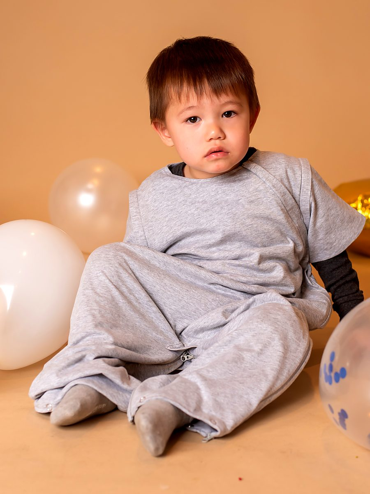
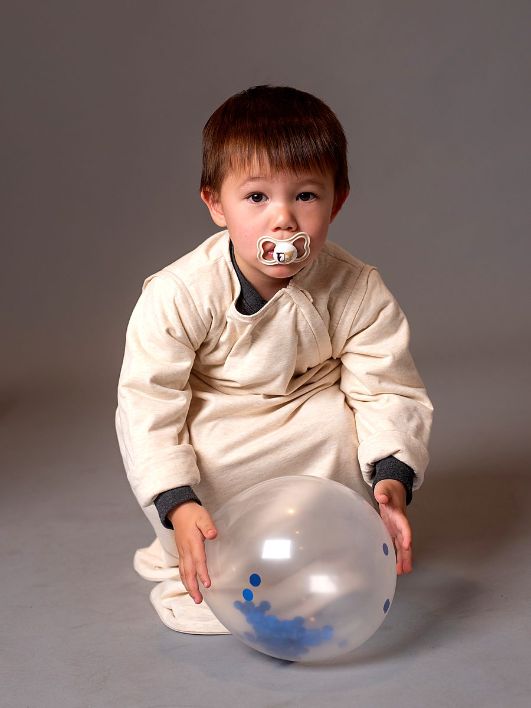
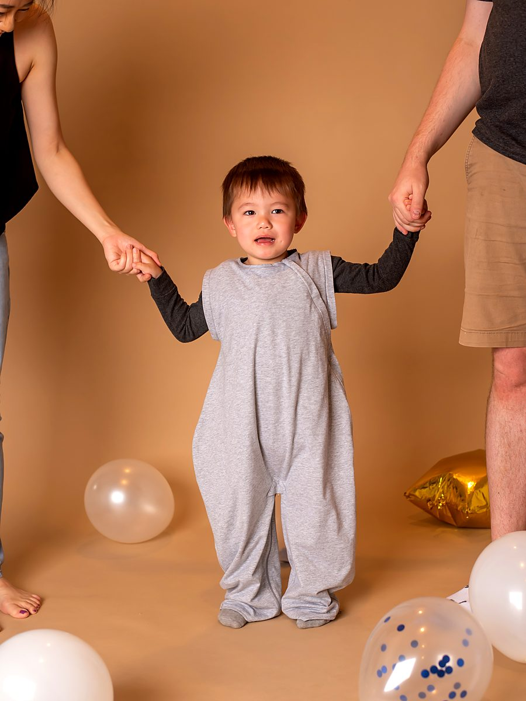
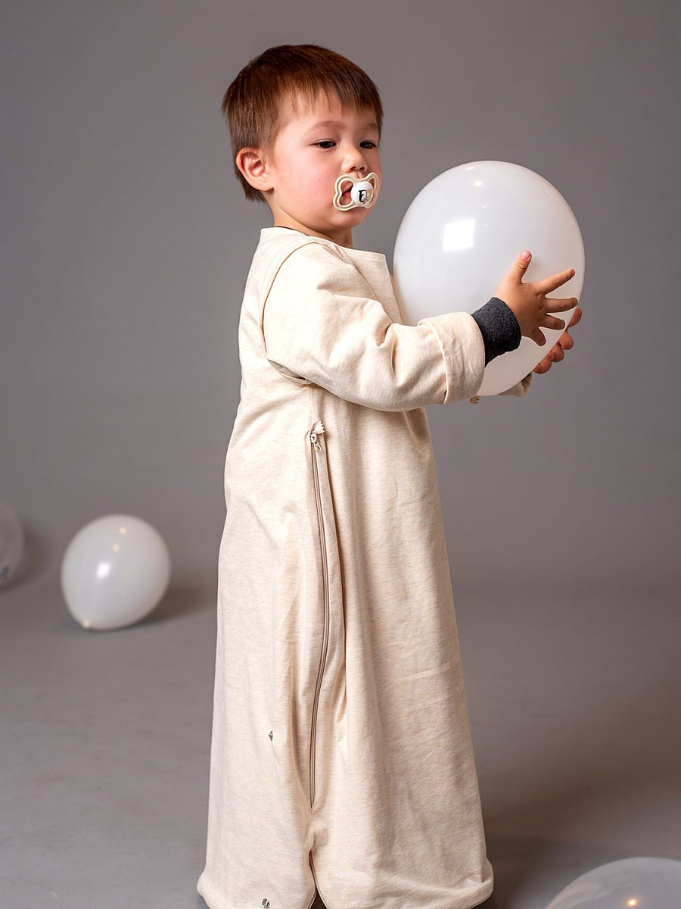
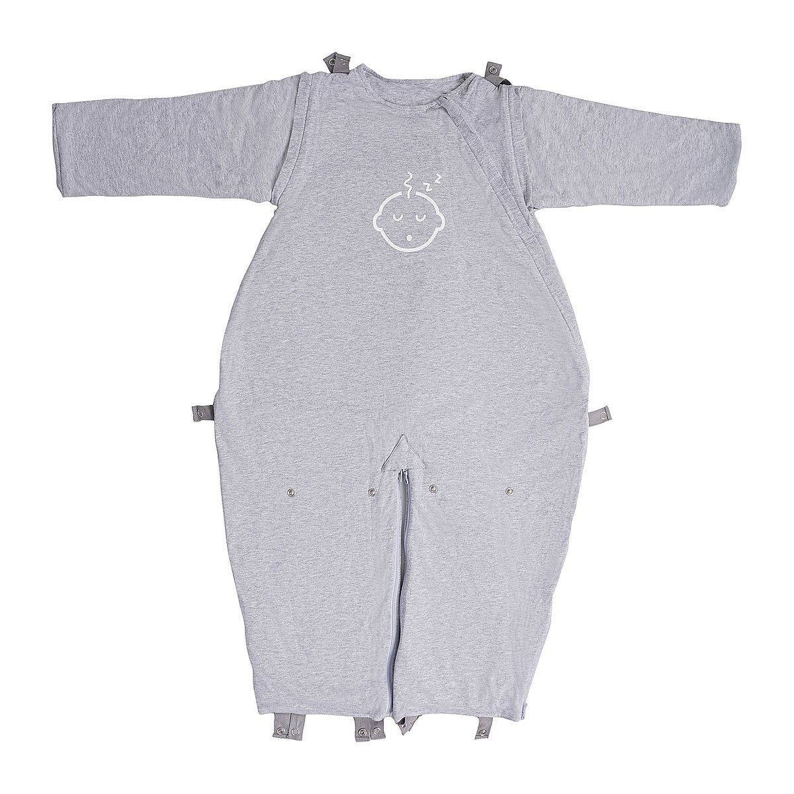
The Every-Season Sleep Sack
· includes inner liner + removable sleeves
Buy nowOur story
Hi! I'm Jennifer, and this is my son Ray. We live in the Pacific Northwest. When Ray was born, I went on a mission to find the perfect sleep sack. At one point I had 11 of them — but none did everything I needed.
I wanted sleeves and a liner I could change with the temperature, room to move for playtime before bed, an easy diaper change, and 100% cotton inside and out. Nothing like that existed.
So with my mom's help, I cut up an old sleeping bag and sewed a prototype. Ray wore it until it fell apart. Then I worked with pattern makers and a manufacturer to make the real thing — the one you see here. I hope your little one loves it as much as we do.
— Jennifer, founder of OatmealBaby
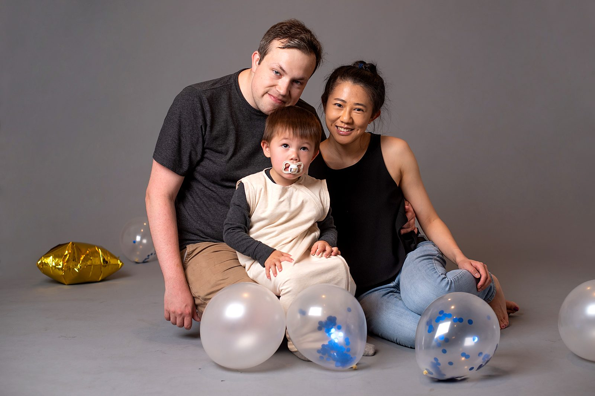
The split-leg style has legs your toddler can walk in, and the bottom folds closed to turn it into a classic sleep bag. The classic style is a traditional bag shape.
Machine wash cold on gentle with like colors, and tumble dry low or hang dry. Remove the inner liner and sleeves and wash them together with the sack.
Shipping is free anywhere in the U.S. Orders ship from Seattle within 3 business days, and we email you tracking once it's on the way.
Unworn items with tags can be returned within 30 days. Just message us and we'll sort it out.
Yes. It passed U.S. children's product safety testing and has a Children's Product Certificate (CPC). As with any sleepwear, always follow safe-sleep guidance from your pediatrician.